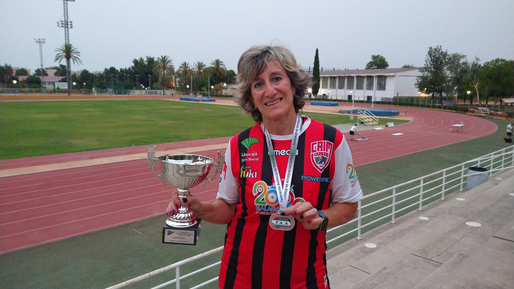
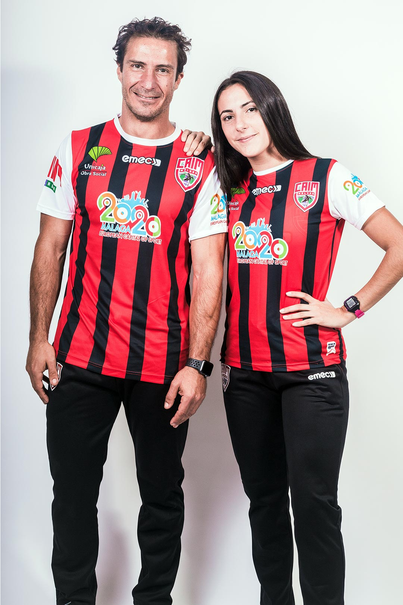
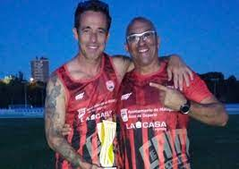

Club Caím
El Club de Atletismo Independiente Malagueño (C.A.I.M.) se fundó en febrero de 1976 en reuniones celebradas en la Ciudad Deportiva de Carranque por una docena de atletas menores de veinte años. Sus estatutos fueron presentados y definitivamente aprobados en agosto de 1977 por el Consejo Superior de Deportes.
| Directiva | ||
|---|---|---|
| María Jose Fructuoso | Germán Muñoz Reina | José Rafael Muñoz |
|  |  |  |